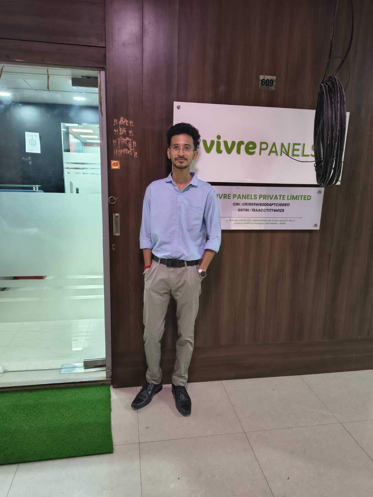
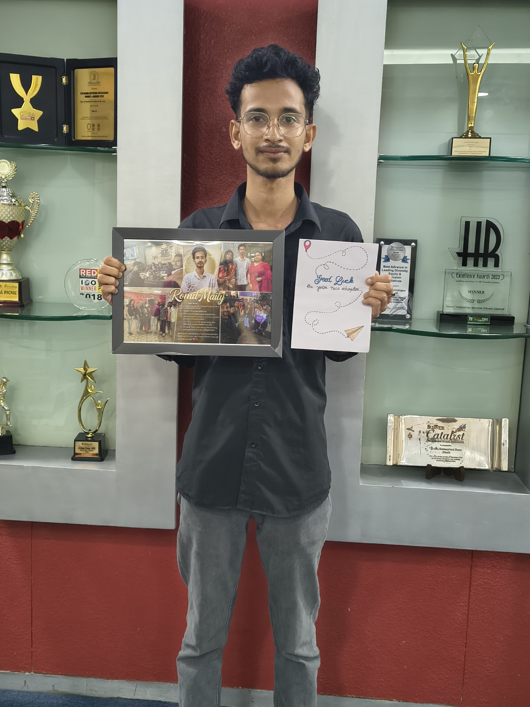
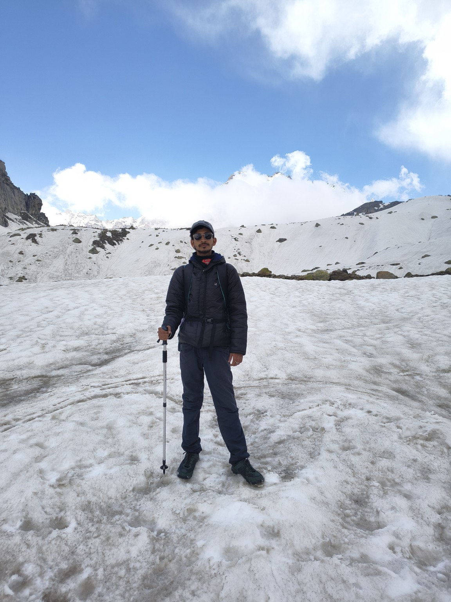
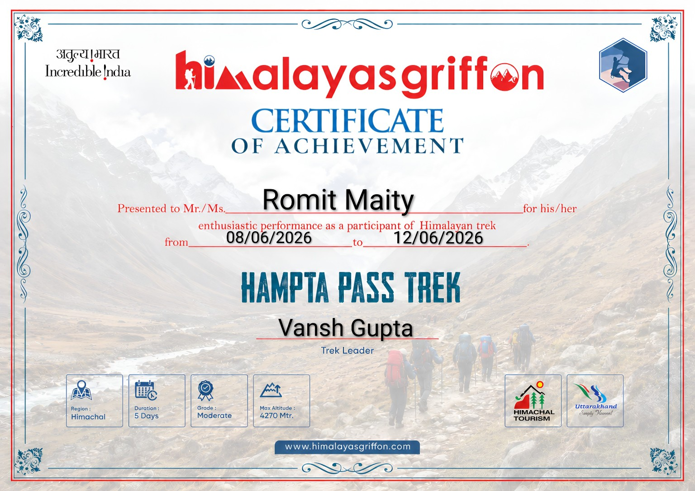
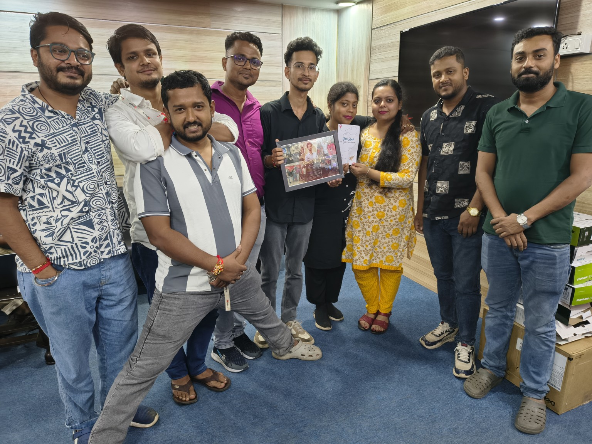
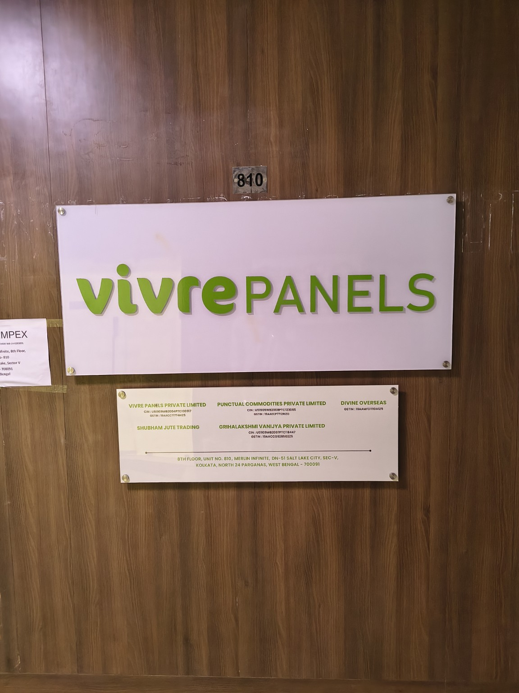

Understand
Start with the business question, source data and constraints.
Data Analyst and AI/ML Developer with 2+ years across analytics, machine-learning workflows, business intelligence, automation and operational systems — with a habit of taking the long way to the mountains.
I’m a Data Analyst and AI/ML Developer working across business operations, data products and machine-learning workflows, backed by a B.Tech in Computer Science (AI & ML).
I work across SQL, Python, Excel, Power BI and Zoho — while building AI/ML workflows around dataset preparation, NLP, transformer-based classification, evaluation, confidence-aware routing and data quality. The goal is simple: turn raw information into reliable systems people can actually use.
The other side of the profile is simple: I like going places. Trekking, high-altitude landscapes and offbeat travel keep me curious outside the screen.
Start with the business question, source data and constraints.
Clean, reconcile and quality-check before drawing conclusions.
Turn the logic into dashboards, workflows, models or useful tools.
Make the result understandable enough to act on.
VIVRE PANELS · KOLKATA
Business and operational analysis with SQL, Excel and Power BI; AI/ML dataset preparation and validation; dashboarding; Zoho workflow data; cross-functional reporting.

IMERIT TECHNOLOGY · KOLKATA
SLA, KPI, productivity and quality analytics; AI/ML dataset validation; Excel and Power BI reporting; workflow and data reliability improvement.

AMAZON · REMOTE
Operational analysis for customer and driver support processes, performance and SLA monitoring, reporting and process adherence.
Confidential business data remains private. These case studies describe the systems and problem spaces without exposing internal records.
Intent classification and confidence-aware routing for business messages, including auto-route, clarify and review paths.
GitHub profile ↗Natural-language sales analytics concept for product, warehouse, state, season and historical queries.
GitHub profile ↗Operational reporting around dispatched, delayed and pending orders, warehouses and physical stock.
GitHub profile ↗NLP experimentation using transformer architectures for emotion and intent classification, evaluation and error analysis.
GitHub profile ↗Decision-ready reporting built around productivity, quality, KPI, SLA and operational performance metrics.
GitHub profile ↗Project repositories can be connected here as they are published.
My AI/ML work sits at the intersection of clean data, language understanding, model evaluation and practical automation — not just model training for the sake of a score.
Clean, structure and validate datasets; inspect label quality, class balance, leakage risks and difficult examples before modelling.
Build classification and NLP workflows using Python, Scikit-learn, PyTorch, TensorFlow and transformer architectures such as RoBERTa and XLNet.
Use accuracy, macro F1, confusion analysis, hard-positive review and error adjudication to understand where a model succeeds or fails.
Translate model confidence and semantic signals into practical auto-route, clarify and human-review paths for business-facing systems.
A broad toolkit across analytics, data science, AI/ML, engineering concepts and business systems.
SQL, MySQL, PostgreSQL, Excel, Power BI, DAX, Pandas, data cleaning, validation, MIS, KPI, SLA, dashboards and operational analytics.
Python, NumPy, Pandas, Scikit-learn, exploratory analysis, feature engineering, classification, model evaluation and NLP.
TensorFlow, PyTorch, Transformers, RoBERTa, XLNet, intent classification, confidence/margin routing and AI/ML dataset workflows.
SQL transformations, joins, aggregations, ETL concepts, structured datasets, data quality, database workflows and SQLite.
Zoho Analytics, Zoho Books, Zoho CRM, dashboards, workflow analysis, reporting and process improvement.
Python, Java fundamentals, Git, GitHub, VS Code, virtual environments, API concepts and documentation.
Brainware University · Kolkata
Trekking, exploring and chasing high-altitude landscapes are a big part of the person behind the profile.

5 days · Moderate · Max altitude 4,270 m · Summit experience


IMERIT / LAST CHAPTER
VIVRE / NEW CHAPTERHave a project, question, collaboration idea or just want to say hello? Send me a message directly from the portfolio.
Press / anytime to open.